A uretra é um tubo muscular responsável pelo transporte da urina da bexiga desde o óstio interno da uretra na bexiga urinária até o óstio externo da uretra.
É revestido por epitélio colunar estratificado , que é protegido da urina corrosiva por glândulas secretoras de muco.
Músculos
Os músculos da uretra são dois basicamente:
M. dilatador da uretra;
M. esfíncter externo da uretra.
A musculatura da bexiga dá origem ao M. esfíncter interno.
Este tem forma elíptica em homens; nas mulheres é mais circular.
Ele serve exclusivamente para a contração da bexiga.
Alguns autores como por exemplo: Dorschmer et al. (2001), defendem que os músculos Detrusor e Esfíncter interno da uretra, são completamente separados (como mostra a figura abaixo).
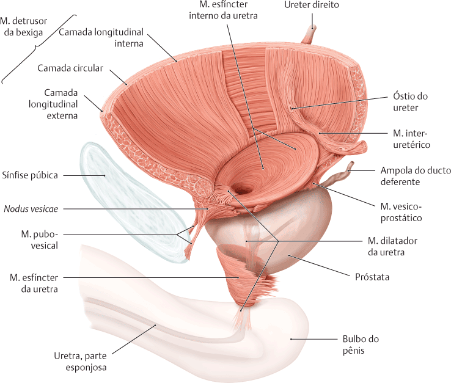
PROMETHEUS: Schünke, Michael. Coleção – Atlas de Anatomia 3 Volumes. 4 ed. Rio de Janeiro: Guanabara Koogan, 2019.
Uretra masculina
No homem, a uretra também serve de via de saída para o sêmen (espermatozóide e secreções glândulares) e é dividida em quatro partes:
Intramural (pré-prostática) = Estende-se quase verticalmente através do colo da bexiga;
Prostática = Desce através da parte anterior da próstata, fazendo uma curva suave, com concavidade anterior; é limitada anteriormente por uma parte deprimida vertical (rabdoesfíncter) do M.esfíncter externo da uretra;
Membranácea (Intermédia) = Atravessa o espaço profundo do períneo, circundada por fibras circulares do M.esfíncter externo da uretra; penetra a membrana do períneo;
Esponjosa = Atravessa o corpo esponjoso; há um alargamento inicial no bulbo do pênis; alarga-se de novo distalmente como a fossa navicular (na glande do pênis).
Corte longitudinal:
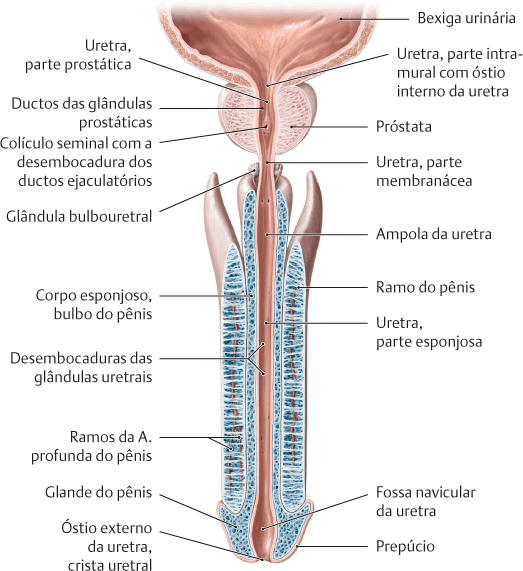
PROMETHEUS: Schünke, Michael. Coleção – Atlas de Anatomia 3 Volumes. 4 ed. Rio de Janeiro: Guanabara Koogan, 2019.
Corte transversal:
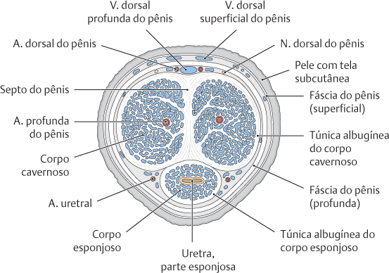
PROMETHEUS: Schünke, Michael. Coleção – Atlas de Anatomia 3 Volumes. 4 ed. Rio de Janeiro: Guanabara Koogan, 2019.
A característica mais proeminente da parte prostática da uretra é a crista uretral (contém tecido muscular e erétil), uma elevação mediana entre sulcos bilaterais, os seios prostáticos.
Os dúctulos prostáticos secretores abrem-se nos seios prostáticos.
O colículo seminal é uma elevação arredondada no meio da crista uretral com um orifício semelhante à fenda que se abre em um fundo de saco pequeno, o utrículo prostático.
MOORE: Keith L. Anatomia orientada para a clínica. 8 ed. Rio de Janeiro: Guanabara Koogan, 2019.
O M. esfíncter interno da uretra nos homens é mais comentado do que nas mulheres, isso possivelmente se deve ao fato de que este músculo em homens, além da função de continência, garante a contração efetiva do colo da bexiga para evitar a ejaculação retrógrada (dupla função nos homens).
O M. esfíncter externo da uretra consiste em duas partes:
Uma parte muscular lisa (interna) em forma de anel (verde nas imagens);
Uma parte longitudinal estriada(externa) em forma de ômega ou ferradura, com um recesso dorsal.
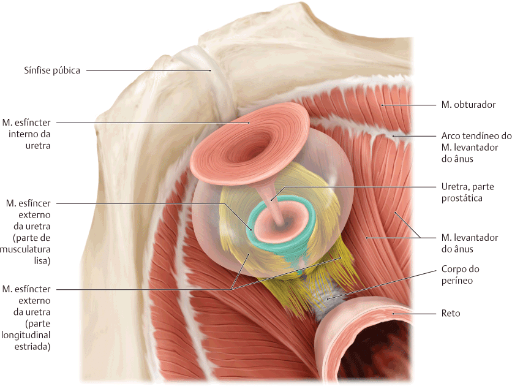
SCHUNKE, M. Prometheus, Anatomia geral e sistema locomotor. 4 ed. Rio de Janeiro, Guanabara Koogan, 2019.
A uretra masculina apresenta duas curvaturas:
A curvatura infrapúbica e a curvatura pré-púbica.
Isso é importante durante a cateterização transuretral da bexiga urinária
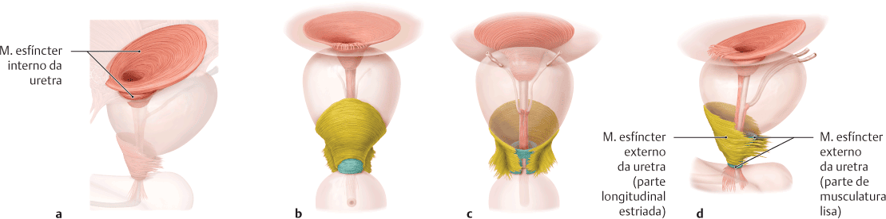
PROMETHEUS: Schünke, Michael. Coleção – Atlas de Anatomia 3 Volumes. 4 ed. Rio de Janeiro: Guanabara Koogan, 2019.
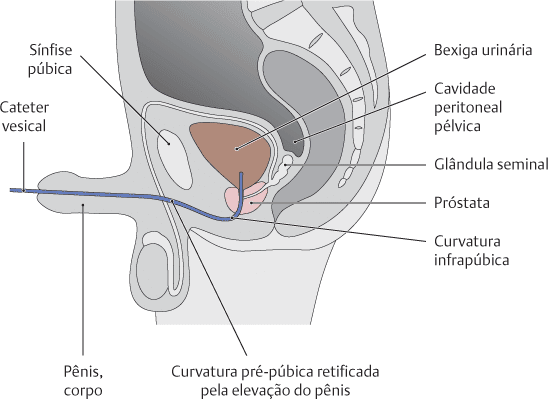
PROMETHEUS: Schünke, Michael. Coleção – Atlas de Anatomia 3 Volumes. 4 ed. Rio de Janeiro: Guanabara Koogan, 2019.
Uretra feminina
Com cerca de 4 cm de comprimento e 6 mm de diâmetro, a uretra feminina segue ântero-inferiormente do óstio interno da uretra na bexiga urinária, posterior e depois inferior à sínfise púbica, até o óstio externo da uretra.
A musculatura que circunda o óstio interno da uretra da bexiga urinária feminina não está organizada em um esfíncter interno.
O óstio externo da uretra feminina está localizado no vestíbulo da vagina, a fenda entre os lábios menores do pudendo, diretamente anterior ao óstio da vagina.
A uretra situa-se anteriormente em um eixo paralelo à vagina e segue com ela através do diafragma da pelve, músculo esfíncter externo da uretra e membrana do períneo.
Há glândulas na uretra, sobretudo em sua parte superior.
Um grupo de glândulas de cada lado, as glândulas uretrais, são homólogas à próstata.
Essas glândulas têm um ducto parauretral comum, que se abre (um de cada lado) perto do óstio externo da uretra.
O músculo esfíncter externo da uretra está localizado no períneo.
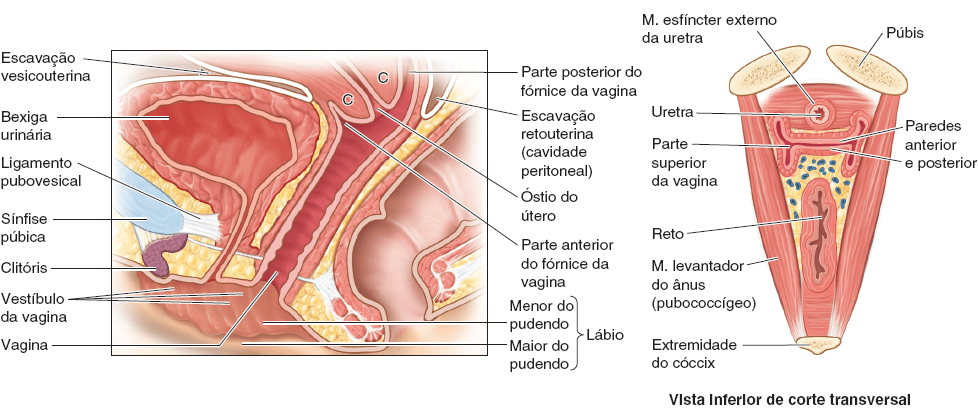
MOORE: Keith L. Anatomia orientada para a clínica. 8 ed. Rio de Janeiro: Guanabara Koogan, 2019.
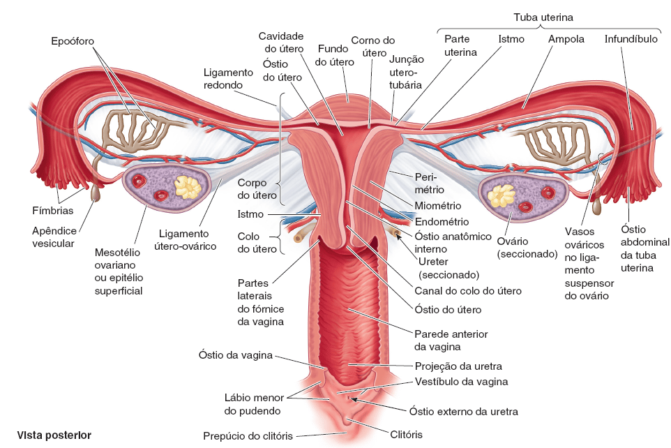
MOORE: Keith L. Anatomia orientada para a clínica. 8 ed. Rio de Janeiro: Guanabara Koogan, 2019.
Vascularização
Uretra masculina
As partes intramural e prostática da uretra são irrigadas por ramos prostáticos das artérias vesicais inferiores e retais médias.
As veias das duas partes proximais da uretra drenam para o plexo venoso prostático.
A irrigação arterial das partes membranácea e esponjosa da uretra provém de ramos da artéria dorsal do pênis.
As veias acompanham as artérias da parte distal e têm nomes semelhantes.
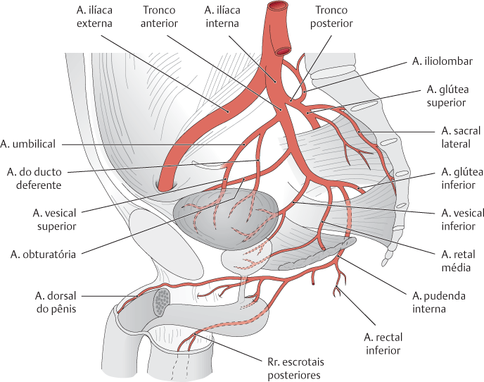
PROMETHEUS: Schünke, Michael. Coleção – Atlas de Anatomia 3 Volumes. 4 ed. Rio de Janeiro: Guanabara Koogan, 2019.
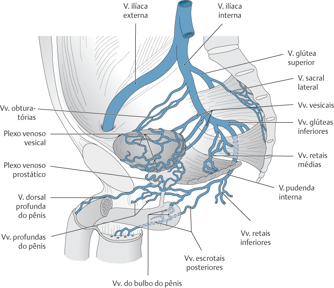
PROMETHEUS: Schünke, Michael. Coleção – Atlas de Anatomia 3 Volumes. 4 ed. Rio de Janeiro: Guanabara Koogan, 2019.
Uretra feminina
A uretra feminina é irrigada pelas artérias pudenda interna e vaginal.
As veias seguem as artérias e têm nomes semelhantes.
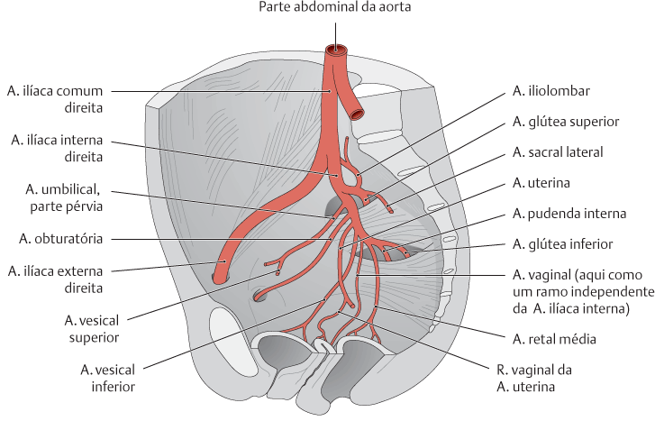
PROMETHEUS: Schünke, Michael. Coleção – Atlas de Anatomia 3 Volumes. 4 ed. Rio de Janeiro: Guanabara Koogan, 2019.
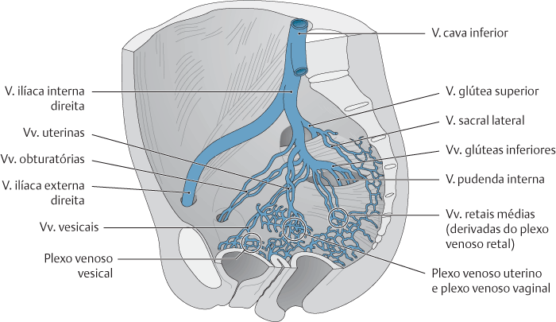
PROMETHEUS: Schünke, Michael. Coleção – Atlas de Anatomia 3 Volumes. 4 ed. Rio de Janeiro: Guanabara Koogan, 2019.
Inervação
Uretra masculina
Os nervos são derivados do plexo prostático (fibras simpáticas, parassimpáticas e aferentes viscerais mistas).
O plexo prostático é um dos plexos pélvicos (extensão inferior do plexo vesical) que se originam como extensões órgão-específicas do plexo hipogástrico inferior.
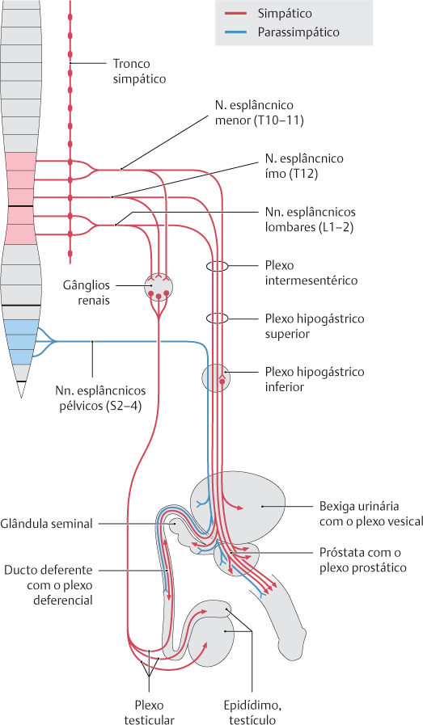
PROMETHEUS: Schünke, Michael. Coleção – Atlas de Anatomia 3 Volumes. 4 ed. Rio de Janeiro: Guanabara Koogan, 2019.
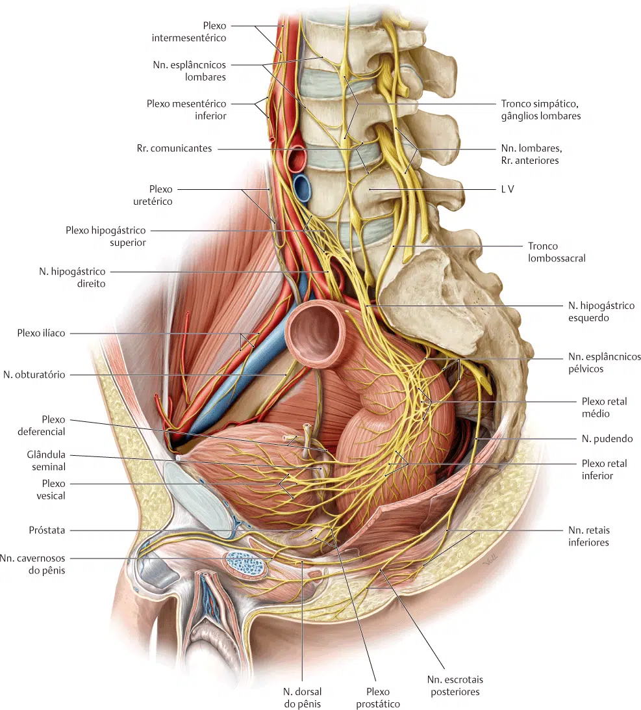
PROMETHEUS: Schünke, Michael. Coleção – Atlas de Anatomia 3 Volumes. 4 ed. Rio de Janeiro: Guanabara Koogan, 2019.
Uretra feminina
Os nervos que suprem a uretra têm origem no plexo (nervo) vesical e no nervo pudendo.
O padrão é semelhante em homens, tendo em conta a ausência de um plexo prostático e de um músculo esfíncter interno da uretra.
As fibras aferentes viscerais da maior parte da uretra seguem nos nervos esplâncnicos pélvicos, mas a terminação recebe fibras aferentes somáticas do nervo pudendo.
As fibras aferentes viscerais e somáticas partem dos corpos celulares nos gânglios sensitivos de nervos espinais S2–S4.
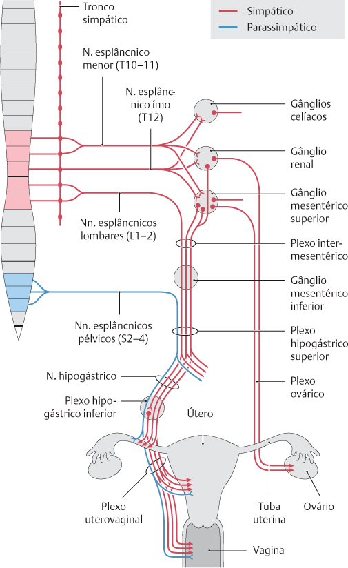
PROMETHEUS: Schünke, Michael. Coleção – Atlas de Anatomia 3 Volumes. 4 ed. Rio de Janeiro: Guanabara Koogan, 2019.
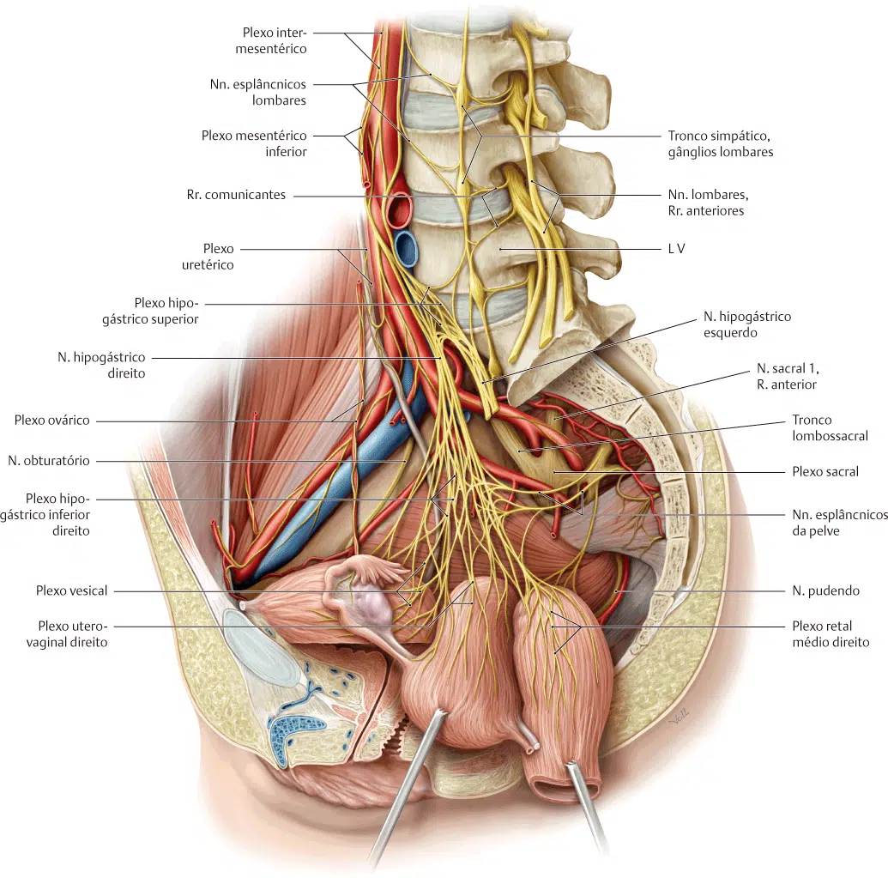
PROMETHEUS: Schünke, Michael. Coleção – Atlas de Anatomia 3 Volumes. 4 ed. Rio de Janeiro: Guanabara Koogan, 2019.